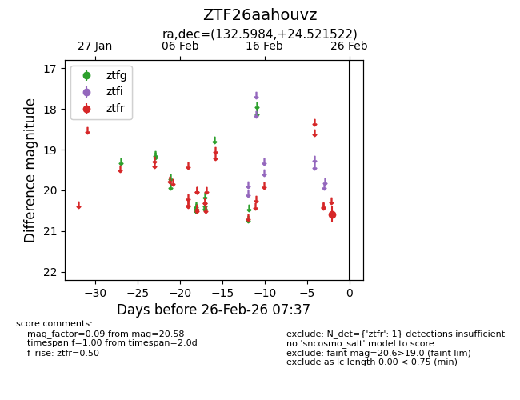
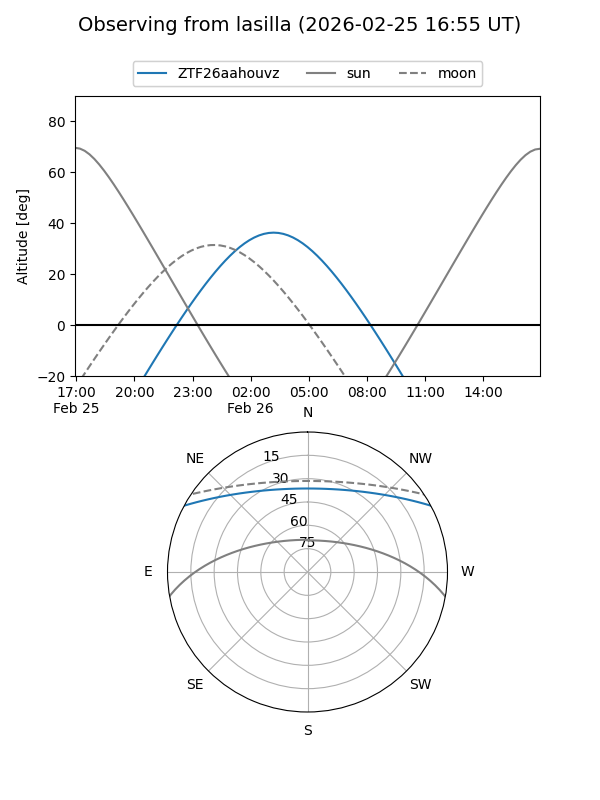
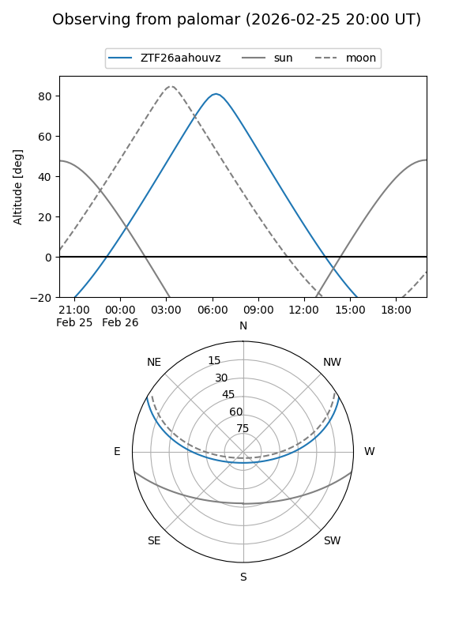

ZTF26aahouvz
Target ZTF26aahouvz at 2026-02-26 07:38
Aliases and brokers:
FINK: link
Lasair: link
ALeRCE: link
alt names
ZTF26aahouvz (ztf,fink_ztf)
Coordinates:
equatorial (ra, dec) = 132.5984,+24.52152
equatorial (HMS+DMS) = 08:50:23.62,+24:31:17.48
galactic (l, b) = (201.2326,+36.22146)
Flags:
Photometry:
last ztfr=20.58
1 ztfr detections
Lightcurve

Visibility


Additional plots